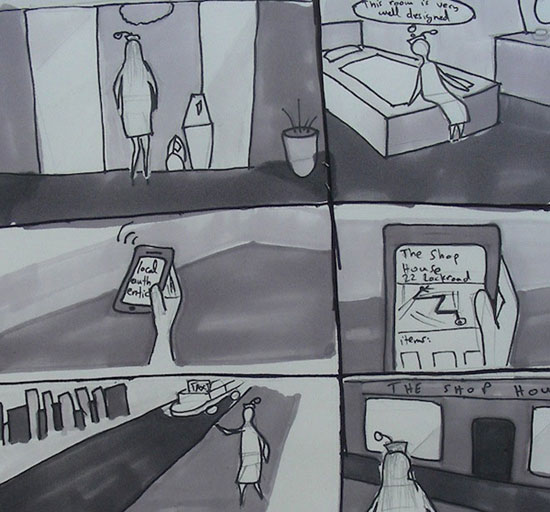
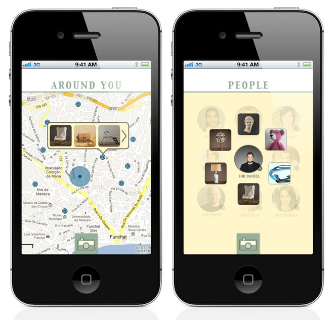

Loqal
Loqal is an iPhone app that was designed as a group project, part of the Basic Interaction Design course. My role was finding a focus, conducting research, ideation, sketching, visual design, interaction design, visual design, video shooting, and video editing. The app helps find local and authentic pieces during travel, and helps assign these pieces as gifts to friends. The below video is an enactment showing how the app is used.
The inspiration for Loqal was from observations around Madeira island. Tourists often look for shops that are not touristic. From the observations we created personas and their scenarios. The storyboard below shows how the persona Trisha uses Loqal.
The next step involved designing the interaction with the app. There are 2 main screens: the first is a map with the shops highlighted, and the second screen is a list of friends and the gifts assigned to them.
